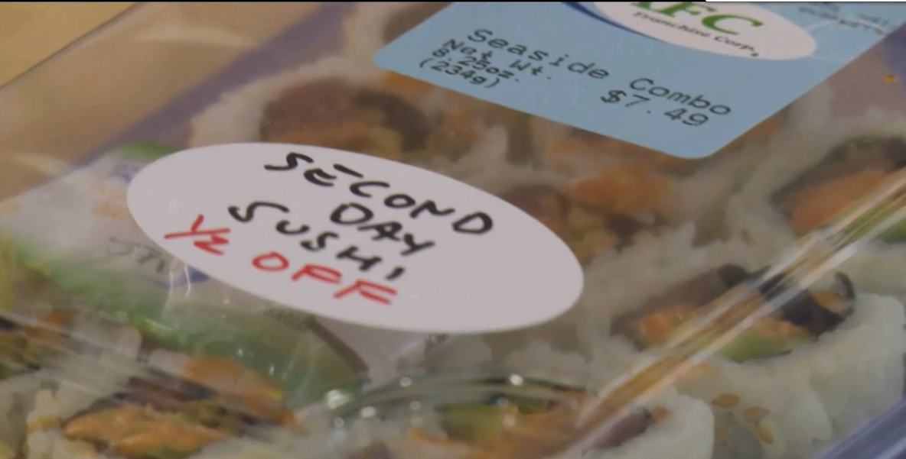

<!-- Slideshow Markdown --> --- class: middle, center # A maioria das ideias e produtos falham: como vencer essa estatística? .center[*"A maioria das ideias falham pois são a 'ideia errada' - ideias que o mercado não está interessado* **independente do quão bem foi executada**. *Sua melhor chance para ter sucesso no mercado é combinar a ideia certa com uma execução competente*." - Alberto Savoia] --- ## Quem sou eu? .center[[Cali]] .center[.image-tiny[]] ### Trajetória: - **Marketing**: Graduei em Marketing em 2003. - **Desenvolvedor**: Fui desenvolvedor de software de 1998 a 2011. - **QA**: Fui analista de qualidade de software de 2009 a 2013. - **CRO**: Fui analista de otimização de conversão e analista BI de 2013 a 2016. - **Facilitador**: Atuo também no papel de facilitador desde 2013. - **Product Manager**: Sou Product Manager desde jan/2017. - **Pessoas & Cultura**: Sou líder do time de Pessoas & Cultura (conhecido no mercado como gerente de RH) desde mar/2019 no GetNinjas --- # Problemas na criação de produtos .center[### Vacilamos entre] .center[###[Mundo das ideias] ou [Vamos codar a porra toda!]] .center[.image-small[] .image-small[]] ??? - Muita ideia e opinião, pouca ação. - Criação de produtos completos, gastando muito tempo e muito dinheiro, com algo que talvez ninguém queira usar. - Investimento em **construir corretamente um produto** sem antes saber o **produto correto a construir**. --- # [Vamos codar a porra toda!] |Foco:|Solution Space: Delivery| |---|---| |**aprendizado**|tardio, caro e volátil| |**velocidade do ciclo**|alta| |**fases do ciclo**|planejamento, execução e revisão| |**objetivo**|execução correta| --- # Minimizar riscos antes de construir algo Tudo isso é super importante: - Os usuários saberão usar isso? - Nós conseguiremos construir isso (temos as habilidades, tempo e tecnologia necessárias)? - Essa solução funcionará pro nosso negócio? Porém, antes, precisamos saber isso: - **Nossos clientes comprarão ou escolherão isso pra usar?** [Ref: Marty Cagan - Inspired] --- class: middle, center # Triple Track Agile --- ||Intention Space|Solution Space: Discovery|Solution Space: Delivery| |---|---|---|---| |**aprendizado**|duradouro|rápido e volátil|tardio, caro e volátil| |**velocidade do ciclo**|1-2x ano|alta|alta| |**fases do ciclo**|empatia, padrões e oportunidades|ideias, hipóteses e pretotipação|planejamento, execução e revisão| |**objetivo**|modelo mental|ideia certa|execução correta| --- |Intention Space|Solution Space: Discovery|Solution Space: Delivery| |---|---|---| |.image-middle[]|.image-middle[]|.image-middle[]| --- |Intention Space|Solution Space: Discovery|Solution Space: Delivery| |---|---|---| |- confiança <br/> - saber se é capacitado pra atender o serviço|- avaliação com mais critérios (atendimento, qualidade, etc) <br/> - mostrar interesse por alguns profissionais <br/>|desenvolvimento padrão| ??? class: middle, center # Intention Space .quote[As pessoas não querem um broca de um quarto de polegada. Elas querem um furo de um quarto de polegada!] -- Theodore Levitt # Intention Space - É o espaço onde o foco não é uma solução mas a intenção maior das pessoas ao realizar algo. - Você quer entender: - os estilos de pensamentos: razões, filosofias e reações emocionais; - as etapas que as pessoas executam para realizar sua intenção ao utilizar um produto; - as necessidades em cada etapa. **Dicas:** - Conheça e determine seu público-alvo. Não faça algo pra todos. - Não foque em dados demográficos. Foque em segmentos de comportamentos e estilos de pensamentos. --- ## Intention Space: exemplo .center[.image-middle[]] --- ## Intention Space: exemplo .center[.image-middle[]] --- class: middle, center # Product Discovery Inspiração: livro "The Right It". --- # Saia do Mundo das ideias ## 4 problemas do mundo das ideias |Problema|| |---|---| |**Tradução**|o que você imagina pode ser diferente do que outra pessoa entende| |**Predição**|sem experimentar não sabemos predizer| |**Pele em Jogo**|enquanto não houver investimento ou risco, não temos clientes| |**Viés de confirmação**|temos uma tendência de buscar evidências que confirmem nossas crenças| ??? Tradução: enquanto suas ideias não forem tangíveis, serão apenas uma abstração. O que você imagina do novo produto ou funcionalidade pode ser completamente diferente do que outra pessoa imagina. Predição: não somos bons em prever se gostaremos ou usaremos algo, sem experimentar. Pele em Jogo: se você não tem algo em risco, algo significativo para ganhar ou perder, não é possível contar com as pessoas como prováveis clientes ou usuários. Serão apenas meros espectadores. Pele em jogo significa compromisso, seriedade e consideração. Viés de confirmação: temos uma tendência de buscar evidências que confirmem nossas crenças ou teorias existentes e de evitar ou descartar qualquer coisa que se oponha a elas. Escolhemos deixar de olhar objetivamente as informações que recebemos. --- # Agora, lembre-se da Lei do fracasso de mercado [colocar exemplos de produtos conhecidos como Google Wave e outros lançamentos] .center[.image-middle[]] *CB Insights: Plataforma de inteligência e análise de dados --- class: middle, center .center[*“A vida é curta demais para construir algo que ninguém quer.“*- Ash Maurya] ??? - A maioria das novas ideias irá falhar no mercado — mesmo que seja executada com competência. --- ## A maneira mais confiável de determinar se uma nova ideia é provavelmente a “Ideia Certa” é coletar seus próprios dados - **Ser recente**: os dados precisam ser frescos. - **Forte relevância**: os dados devem ser aplicáveis diretamente para o produto. - **Confiável**: procedência conhecida. Saber métodos, contexto e motivação para coleta dos dados. - **Estatisticamente significante**: amostra suficiente para que o resultado não seja atribuído apenas a uma chance. ### IMPORTANTE LEMBRAR: Os dados de outras pessoas falharão em um ou dois desses critérios. ??? # Colete Seus Próprios Dados! Não podemos confiar cegamente e dados de mercado coletados e compilados por outras pessoas, para outros projetos, em outros momentos, em outros lugares, com outros métodos e outros propósitos. Não podemos nos basear nesse tipo de dado para determinar se uma ideia é provável de ter sucesso no mercado. É tentador, mas preguiçoso e perigoso esse atalho. Se não podemos confiar nas nossas opiniões, opiniões de outras pessoas ou nem mesmo em opiniões de especialistas, como podemos decidir se uma ideia que desejamos desenvolver provavelmente terá sucesso? Você precisa de dados! Dados superam opiniões. Ser Recente: os dados precisam ser frescos — quanto mais recente melhor. O que era verdade há algumas semanas atrás pode não ser verdade hoje. Especialmente pensando em negócios de tecnologia e no mundo online, onde as atitudes e expectativas das pessoas mudam mais rapidamente. Forte Relevância: os dados devem ser aplicáveis diretamente para o produto, serviço ou decisão que está sendo avaliada. Confiável: Procedência conhecida: não basear em dados coletados por outras pessoas, outras organizações ou outros projetos para tomar suas decisões. Não sabemos os métodos que as pessoas utilizaram para coletar e filtrar os dados. Não sabemos os vieses, influências e motivações que podem ter afetado quando os dados foram compilados e sumarizados. Estatisticamente Significante: os dados devem ser estatisticamente significantes. Devem ser baseados em uma amostra suficientemente larga para que o resultado não seja atribuído apenas a uma chance. --- # Como começar? [revisar. antigo slide 17] - Hipótese de Engajamento de Mercado (HEM) - Zoom: Defina sua hipótese XYZ - Super Zoom: hipótese xyz --- # Hipótese de Engajamento de Mercado (HEM) - A hipótese que identifica sua crença ou suposição fundamental sobre como o mercado se envolverá com sua ideia. - Ela articulará sua visão de como o mercado responderá e usará sua ideia. **Exemplo:** Algumas pessoas que vivem afastadas de grandes metrópoles terão interesse numa apresentação sobre validação de produto digital. --- # Zoom: Hipótese XYZ - Torna a HEM em uma ideia testável - Faz com que você torne explícitas as suposições implícitas - **Modelo:** Pelo menos X% de Y irão Z: - X é uma porcentagem específica do seu mercado-alvo. - Y é uma descrição clara do seu mercado-alvo. - Z é como você espera que o mercado se envolva com a sua ideia. - XYZ: são apenas pontos de partida **Exemplo:** Ao menos 1% das pessoas que vivem em cidades a mais de 100km de São Paulo e trabalham com algo relacionado a tecnologia participarão numa apresentação gratuita sobre validação de produto. ??? Os valores iniciais para X, Y e Z serão apenas pontos de partida — as melhores estimativas baseadas no tamanho mínimo de mercado que acredita ser necessário para que sua ideia seja viável. - X: porcentagem específica do seu mercado-alvo. Qual porcentagem do nosso mercado-alvo podemos capturar? - Y: descrição clara do seu mercado-alvo. Qual é o nosso mercado alvo? - Z: como você espera que o mercado se envolva com a sua ideia. Como e exatamente até que ponto o mercado alvo se envolverá com o nosso produto? --- # Super Zoom: Hipótese xyz Uma versão: - menor - mais simples - imediatamente mais verificável **Ou seja:** mais acionável e testável para esse momento. **Exemplo:** Ao menos 1% pessoas que conhecem o ONOVOLAB em São Carlos participarão numa apresentação gratuita sobre validação de produto. ??? Apesar da hipótese XYZ já nos dar mais clareza sobre a HEM, ela ainda é um tanto vaga e com algumas coisas implícitas. A ideia é que, se a Hipótese **XYZ** for verdadeira, então **xyz** também deve ser verdadeira — mas muito mais fácil de testar e verificar. --- class: middle, center # Pretótipo Ixi, será que o Cali escreveu errado? Seria protótipo? --- # Pretótipo: surgimento do nome - IBM: experimento simulando escrita por comando de voz (pretending typing). .center[.image-small[]] .quote[*A palavra funcionou bem para mim porque o prefixo pré-sugere algo que vem antes de outra coisa. Neste caso, a pré-tipagem vem antes da prototipagem, e o substantivo pretótipo descreve um artefato que precede um protótipo. Então, o pretótipo combina os elementos críticos de ambos 'vem antes' e 'finge'*.] - Alberto Savoia --- # Pretótipo x Protótipo ||Pretótipo|Protótipo| |---|---|---| |**investimento**|baixo|5 reais ou 5 milhões| |**tempo**|horas a dias|horas a anos| |**foco**|fase bem inicial de descobertas|abrangente| - Em geral, um protótipo serve para validar se há viabilidade de se fazer o produto, como ele será feito e como funcionará. --- # O que define um pretótipo: - **Seus próprios dados** com **pele em jogo** para validar uma **hipótese xyz** - Implementação rápida - implementação barata --- class: middle, center # Termômetros para medir confiabilidade dos experimentos --- # Medidor de pele em jogo: |Input|Pontos| |---|---| |Opiniões (mesmo de especialistas)|ZERO| |Email ou telefone falso|ZERO| |Comentários ou likes|ZERO| |Pesquisas|ZERO| |Email válido com entendimento explícito|1| |Telefone válido com entendimento explícito|10| |Comprometimento de tempo (1 ponto por minuto)|30| |Dinheiro (1 ponto por 1 real)|50| ??? **Opiniões** — “ótima ideia”, “vá em frente” ou “ninguém vai comprar” — ZERO PONTOS. **Email ou telefone falso** — ZERO PONTOS. **Comentários ou likes em redes sociais** — ZERO PONTOS. **Pesquisas, enquetes, entrevistas online ou offline** — ZERO PONTOS. **Email válido com entendimento explícito** que será usado para atualização e informações sobre o produto — “Nos informe seu email para receber atualizações sobre o produto” — UM PONTO. **Telefone válido com entendimento explícito** que a pessoa receberá ligação para atualização e informações sobre o produto — “Nos informe seu telefone para que possamos te ligar e falar sobre nosso produto”— DEZ PONTOS. **Comprometimento de tempo** — “Venha para uma demonstração de 30 minutos do produto” — 30 pontos (1 ponto por minuto) **Dinheiro** — “Pague R$50 para estar numa lista de espera” — 50 (1 ponto por 1 real) --- # Como saber se descobriu a "Ideia Certa"? - Realizar de 3 a 5 experimentos com uma hipótese xyz. Se for uma ideia que envolve riscos significantes ou um grande investimento, poderá ser necessário mais experimentos. - O número de experimentos deve ser proporcional ao investimento e consequências da falha — o quanto você está com com a pele em jogo ou a cara à tapa. --- # Medidor de "Ideia Certa" .center[.image-large[]] ??? - Se os dados significantemente excedem o que a hipótese prediz, você anota como “Muito Provável”. (~90%) - Se os dados alcançam expectativa ou levemente superam o que a hipótese prediz, você anota como “Provavelmente”. (~70%) - Se os dados apontam para algo um pouco abaixo do que a hipótese prediz, você anota como “Improvável”. (~50%) - Se os dados apontam para algo bem abaixo do que a hipótese prediz, você anota como “Muito Improvável”. (~30%) - Finalmente, se os dados são de alguma forma ambíguos, pontencialmente corrompidos ou difícil de interpretar, você anotar como “50/50” ou opcionalmente você pode descartar ele. Afinal de contas, mesmo na ciência nem todos experimentos produzem dados limpos e confiáveis. (~10%) --- # Táticas - Pensar globalmente, testar localmente - Testar agora supera testar depois - Pensar barato, mais barato, o mais barato possível - Ajuste e experimente antes de desistir --- [rever se cabe tudo junto] ### Pensar globalmente, testar localmente - Como medir: distância dos dados (DDD) - Quanto menor a distância, mais dinheiro e tempo pode salvar, permitindo rodar mais experimentos ou validar outras ideias. ### Testar agora supera testar depois - Como medir: horas para dados (HPD) - Quanto menos horas demorar para executar um experimento melhor. Tente se colocar um limite de 48h para rodar o primeiro experimento. ### Pensar barato, mais barato, o mais barato possível - Como medir: dinheiro para os dados (DPD) - Faça o teste da forma mais barata possível. ??? - Exemplo: se você planeja coletar dados num local físico, você poderia medir em metros ou kilômetros, por exemplo. --- ## Ajuste e experimente antes de desistir - Não deixe seus dados dos experimentos iniciais te desencorajar prematuramente. - É **improvável** que a primeira versão da sua ideia seja a “Ideia Certa”. - Teste, Ajuste, Repita. .center[.image-middle[]] ??? Sabemos que poucas ideias saem prontas pro sucesso do “Mundo das Ideias” e precisarão de ajustes. A primeira versão da sua ideia pode ser a “Ideia Errada”, mas você pode estar apenas a alguns ajustes da “Ideia Certa”: ### teste, ajuste, repita. --- ## Ajuste e experimente antes de desistir - Depois de ajustes e experimentos, uma ideia pode se mostrar ruim. - Esteja pronto para aceitar. .center[.image-middle[]] --- ## Tweak beats Pivot - Ajustar (tweak) supera mudança de rumo (pivot). - O primeiro é rápido e barato, o outro, tardio, caro e perigoso. <br /><br /><br /> .center[*"10 pequenos ajustes é melhor que uma dolorosa mudança de rumo"* - Alberto Savoia] --- class: middle, center # Técnicas de pretotipagem Existem inúmeras. Essas serão apenas exemplos. --- # Técnicas de pretotipagem ## Flinstoning (Mágico de OZ) [falar do caso da avaliação 2.0 GN que os dados seriam importados manualmente?] - Executa como se fosse um produto, porém é feito um trabalho manual por trás dos panos. - Validação da ideia e adaptação rápida. .center[.image-middle[]] ??? https://stackingthebricks.com/the-fine-art-of-flintstoning/ Password reset? Nope. If you lost your password, email us — we’ll reset it for you. (Manually, in the MySQL terminal. Those were the days.) Delete or archive users to kick them out of your system? Nope… email us. Export or import data? You guessed it… email us. It would involve the MySQL terminal again. Absolutely any other kind of “app admin” type stuff we needed to do? MySQL. Terminal. Or maybe IRB. Or both. What I’m saying is: By hand. (Not live on production, though; we’re not animals.) And my personal fave… Shut off an account after a credit card failure? Hahaha, this one’s a trick! When we launched Freckle, our code wasn’t even done for regular billing — and as for re-billing and lockout, we didn’t automate that for six months. --- # Técnicas de pretotipagem ## Adaptação ou re-etiquetação - Faz uso de um produto existente com outra capa ou marca. - Com algumas modificações, um produto já existente pode representar seu novo produto para validação; .center[.image-middle[]] --- # Técnicas de pretotipagem ## Porta Falsa (Fake-Door) - Medidor de interesse - Testa o nível inicial de interesse em um produto ou serviço ainda a ser desenvolvido. - Por trazer decepção, pode diminuir sua credibilidade com o tempo. - Se utilizar, planeje em como encantar quem bateu na porta. .center[.image-middle[]] ??? - Exemplo de mensagem: “Sorry, this product is not yet available. But we are working really hard on it and your registration gives us extra motivation. We promise that you will be the first to know about future developments!” --- .center[.image-small[]] --- .center[.image-small[]] --- # Dados - 4% dos pedidos são marcados pra serem cancelados. - ~30% são de pessoas que desejavam apenas saber preço. - ~15% dos pedidos eram de pessoas testando a plataforma --- class: middle, center # Fodeu: como combinar e usar tudo isso? --- ## Exemplo: Sushi Barato e Rápido ||Descrição| |---|---| |Ideia|Sushi Barato e Rápido: um food truck de comida de sushi barato: 10 sushis por R$2.| |HEM|Se fizermos sushi tão rápido e barato quanto outro fast food, muitos amantes de sushi escolherão isso em vez de hambúrgueres, tacos ou opções menos saudáveis| |XYZ|Pelo menos 20% dos comedores de sushi embalado experimentarão Sushi do "dia seguinte", se for metade do preço do sushi normal embalado.| |xyz|Pelo menos 20% dos estudantes que compram sushi embalado para almoço na lanchonete ABC escolherão "Sushi do dia seguinte" se for pela metade do preço do sushi embalado normal.| --- # Exemplo: Sushi Barato e Rápido Exemplo de primeira iteração do experimento: - Re-etiquetar de 40 a 80 caixas de sushi da lanchonete como "Sushi do dia seguinte pela metade do preço". - Experimentar a venda das caixas por alguns dias. .center[.image-middle[]] --- ## Exemplo de resultados Resultados possíveis da primeira iteração (Ideia 1): |Iteração|% de vendas de sushi do dia seguinte comparado ao sushi normal|% da hipótese|Ideia certa?| |---|---|---|---| |1|5%|25%|Improvável| |2|30%|150%|Muito provável| |3|10%|50%|Talvez| |4|20%|100%|Muito provável| --- ## Exemplo de resultados .center[.image-large[]] --- ## Exemplo da primeira ideia falhando - Se a Ideia 1 se mostrasse errada, poderíamos ajustar e experimentar novas ideias com mais iterações. .center[.image-large[]] --- class: middle, center *"Não há dados dentro do seu escritório, então saia dele."* ― Steven Gary Blank ??? *“There Are No Facts Inside Your Building, So Get Outside.”* --- # Isso é tudo, pessoal! .center[![]()] ## Linkedin: linkedin.com/in/renatocaliari .center[]